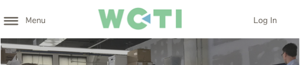
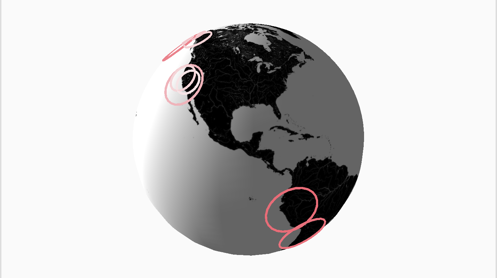
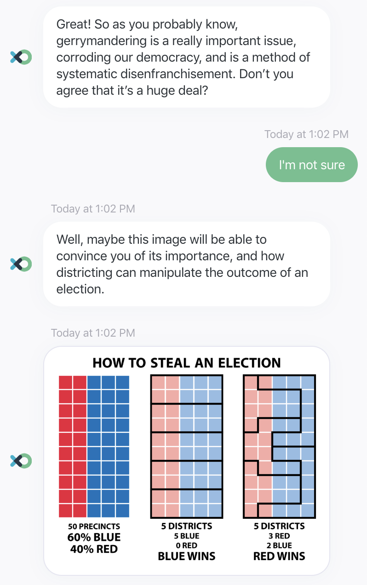
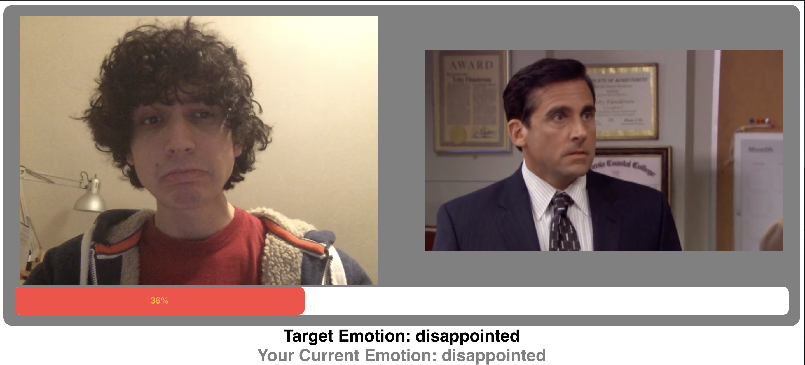

HCI Project Gallery
Welcome to my HCI project gallery! You can preview, read about and even play many of the team projects we produced over the course of the term. If you're looking for my design manifesto, click on the button below.
For each of the listed projects, I have provided a button that links to the Medium blog post. For two of the projects, you can click the "play" button to interact with them directly. I hope you enjoy browsing some of the neat projects we had the opportunity to create!
A Little About Myself
I am a computer science student at WPI with a wide range of interests. Unsurprisingly, I'm a big fan of computers. I love to program, especially when it relates to graphics and game development. I have also always been interested in graphic design, art and animation. I'm always trying to learn new things and explore the ways I can apply my knowledge. This website is an example of that. Once you're done with this page, I hope you take the opportunity to explore the rest of this site and check out my GitHub. Anyway, I hope you have fun!
Design For Others
In this project, we were tasked with designing a mobile site for a given demographic. We used multiple tools to prototype and refine the design.
Design For Understanding
This project tasked us with building a "clear" visualization and a "creative" visualization. I worked on the "creative" side, programming and designing a 3D globe to visualize earthquakes using the p5 library.
Design For Tension
In this project, we had to design an argumentative chatbot that allowed a user to engage in a debate to explore a topic. We had a lot of fun injecting our bot with humor, and learned a lot about the relatively unexplored art of building a chat-based interface.
Design For Well-being
This project allowed us to consider how an "emotionally aware" piece of software might change the experience. We leveraged this idea to create a pretty goofy game. You can play an abridged version of that game right here on this site.
